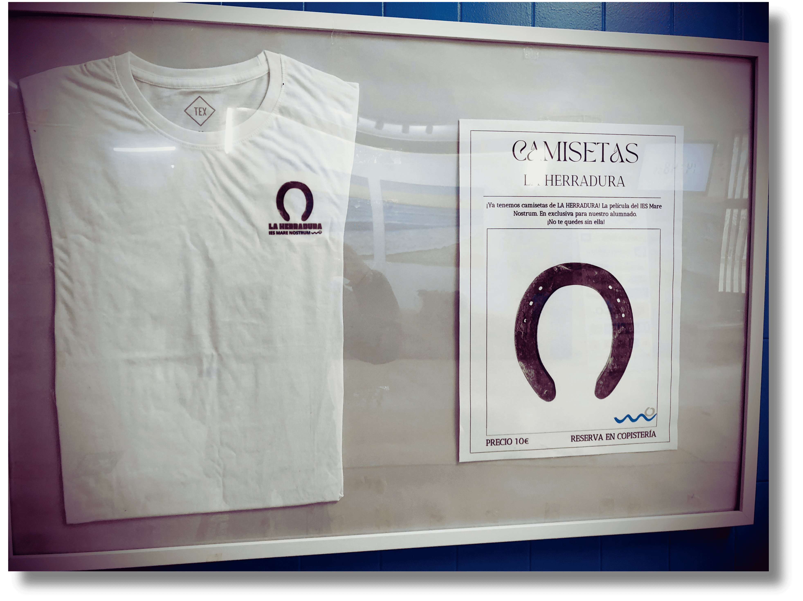
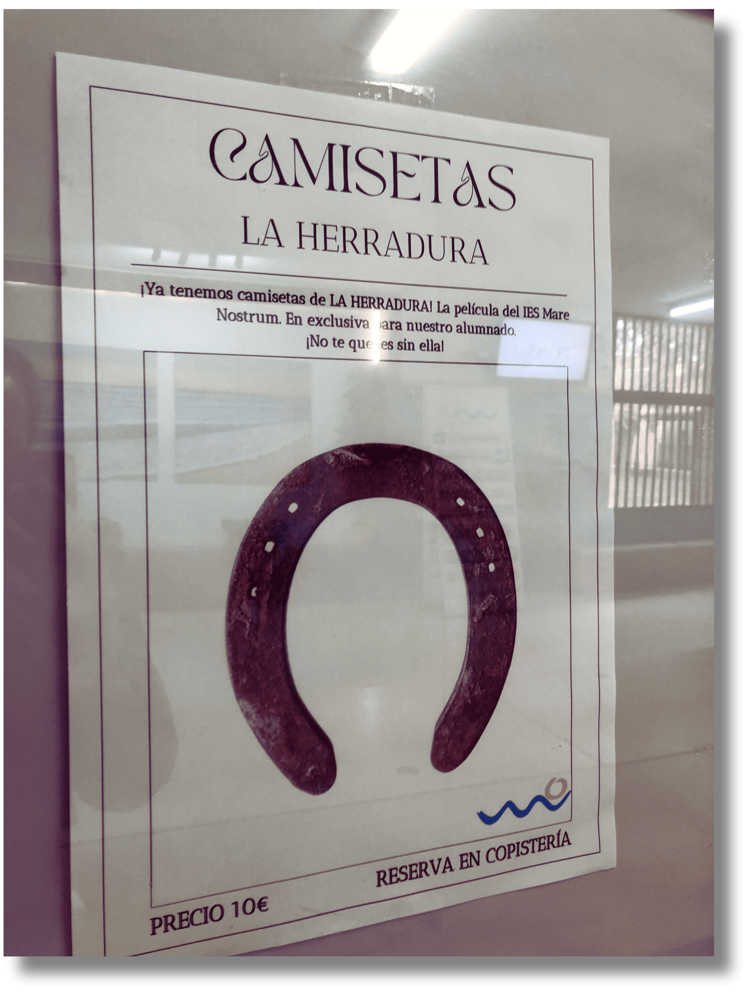
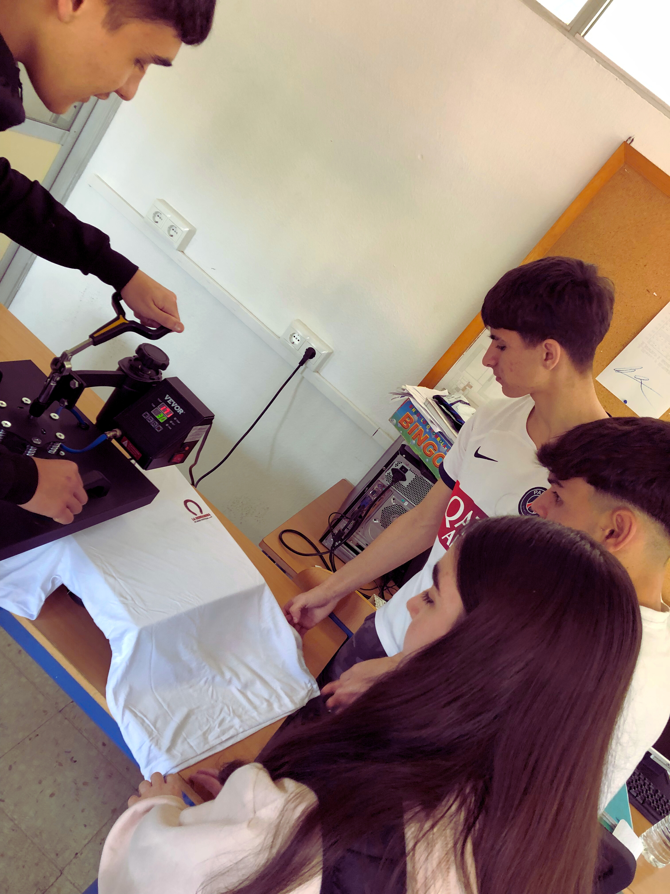
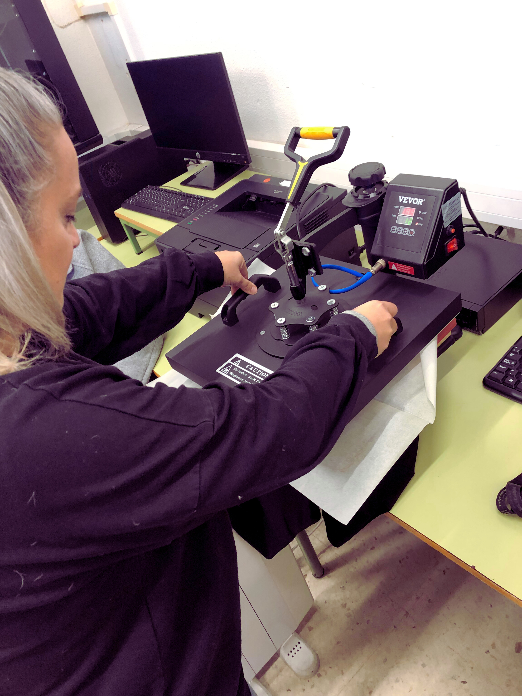

LA HERRADURA, se viste y se luce
 Dentro de las acciones de difusión de La Herradura, decidimos apostar por una idea cercana, original y que generara identidad: crear camisetas de la película y ponerlas a la venta en el propio instituto. De este modo, no solo conseguimos dar visibilidad al proyecto, sino que también hicimos partícipe a toda la comunidad educativa.
Dentro de las acciones de difusión de La Herradura, decidimos apostar por una idea cercana, original y que generara identidad: crear camisetas de la película y ponerlas a la venta en el propio instituto. De este modo, no solo conseguimos dar visibilidad al proyecto, sino que también hicimos partícipe a toda la comunidad educativa.
Las camisetas se elaboraron en dos modelos: blancas y negras, ofreciendo variedad y estilo para que cada persona pudiera escoger la que más le gustara. Para su confección utilizamos los recursos del Aula ATECA, en concreto la máquina de estampación, lo que permitió al alumnado participar directamente en el proceso de diseño y producción. Así, además de ser un soporte publicitario, las camisetas se convirtieron en un aprendizaje práctico de cómo funcionan las técnicas de impresión.
La iniciativa sirvió para reforzar el sentimiento de pertenencia: llevar puesta La Herradura era una forma de sentirse parte del proyecto, incluso sin estar directamente en el rodaje. Esta acción demostró que la creatividad no se queda en la pantalla, también puede vestir los pasillos del instituto.
En un primer momento se colocó información relacionada con la venta de camisetas por el instituto. Se dio publicidad con este anuncio:


Cuadro publicitario

Cuadro publicitario con camiseta

La máquina de estampación de camisetas funcionaba sin descanso:
|  |
 |
|
Alumnado IES Mare Nostrum. Sublimando camisetas LA HERRADURA (CC BY-SA)
|
|
¡Y hasta nos animamos a hacer la Maratón de Málaga con una de nuestras camisetas!